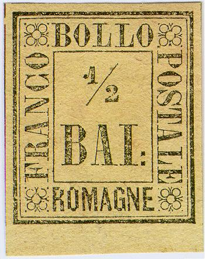
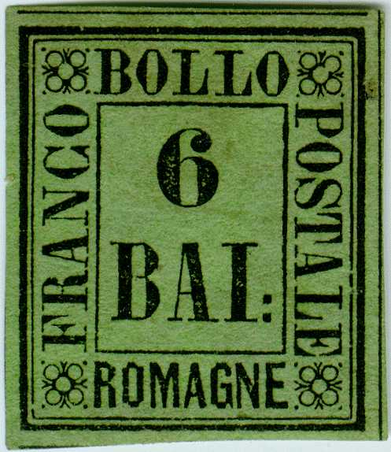
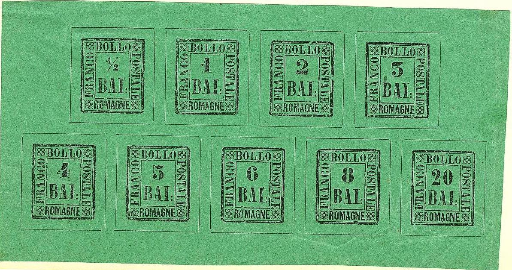
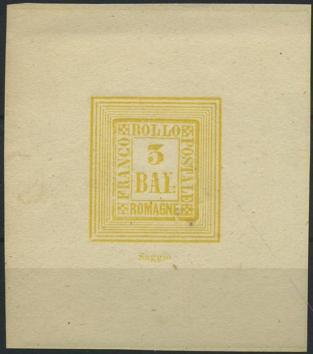
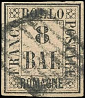
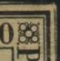

Return To Catalogue - Romagna forgeries - Italy - Usigli - Moens
Note: on my website many of the
pictures can not be seen! They are of course present in the
catalogue;
contact me if you want to purchase the catalogue.
Currency: 100 Bajocchi = 1 Scudo
With thanks to Lorenzo, (check his excellent
website on Italian States!
http://www.antichistati.com/800/index800.html) who kindly set
some of his images at my disposal
The province of Romagne was included in the Papal States. The stamps of Romagne were
only used during the provisional government from 1st september
1859 to 12 january 1860. It was annexed by Sardinia
afterwards.
1/2 Baj black on yellow 1 Baj black on grey 2 Baj black on orange 3 Baj black on green 4 Baj black on brown 5 Baj black on violet 6 Baj black on green 8 Baj black on red 20 Baj black on grey
All of these stamps (except the 4 b) are more valuable cancelled than unused. The values 6 b, 8 b and 20 b are very rare in used condition. The 1/2 b, 1 b, 2 b, 4 b, 6 b and 8 b are known to exist bisected (to serve for half their initial value). The stamps were printed in sheets of 120 (two groups of 60).
Value of the stamps |
|||
vc = very common c = common * = not so common ** = uncommon |
*** = very uncommon R = rare RR = very rare RRR = extremely rare |
||
| Value | Unused | Used | Remarks |
| 1/2 b | *** | RR | |
| 1 b | *** | R | |
| 2 b | *** | R | |
| 3 b | *** | RR | |
| 4 b | R | R | |
| 5 b | *** | RR | |
| 6 b | *** | RRR | |
| 8 b | *** | RRR | |
| 20 b | *** | RRR | |
| Reprints (all values) | c | ||
Official reprints do not exist, however private reprints exist (the impression is more worn, see image below). The forger Usigli obtained the plates from these stamps (together with genuine obliterators). He made private reprints and essays (see below) with these and with retouched plates. He also made proofs, by adding a 7 lined frame all around the stamps and adding the word 'Saggio' at the bottom. He sold the plates to a certain Bonasi (Giulio Cesare Bonasi, or Count Bonasi), who sold them again to the stamp dealer Moens in Belgium. Moens also made private reprints from retouched plates (the upper right circle in the upper right ornament is closed instead of open as in the original stamps; see below for example) in 1892. These retouched plates then were passed on to Julius Goldner, a forger from Hamburg, Germany (see 'Philatelic Forgers, their lives and works' by Varro E.Tyler). This forger then printed another set of 'reprints' in 1897 (recognizable by the badly retouched corner lines of the inner frame, and the fact that most of the dots around the corner rozettes are missing according to 'The Forged Stamps of all Countries' by J.Dorn).



Usigli reprints
'Saggio' essays made by Usigli:



These are 'essays' printed by Usigli
ment for the stamp dealer Moens. The
central part of the design is often broken and badly printed as
in the Usigli reprints. The word 'Saggio' is usually printed at
the bottom. Some of my copies are printed on rather thick ribbed
paper, while others are printed on normal paper.
According to the book "The Romagna" by Patton, Usigli also made strips with several values from the same damaged cliches. These are probably as the above shown minisheet.




Genuine cancels? On the right two "CENTO" cancels.
The private reprints are frequently cancelled and offered as genuine (according to Album Weeds).
Many forgeries exist, examples:

Note on forgeries: in the right upper corner, the genuine stamps always have a white space in between the central circle and the upper right circle. In the above forgeries these circles are perfect circles.
(Forged block of four stamps)
I've seen blocks of four reprints, with the text 'Nd.'
printed at the back ('Neudruck' in German?). This overprint
resembles the overprints on the reprints of Thurn and Taxis. The
above image shows such a reprint (reduced size). This might be
the private reprint from Hamburg of 1897 that is mentioned in
'The forged stamps of all countries' by J.Dorn.


Blocks of four forgeries. Genuine stamps were not printed in
blocks of four.

More of these reprints, all with "Nd." on the back.
Click here for more Romagna forgeries
I've been told that the above stamps in colors different from the issued stamps are essays.
Literature:
"The Romagna" by Patton


{kind=link}
{kind=link}
{kind=link}
{kind=link}
{kind=link}